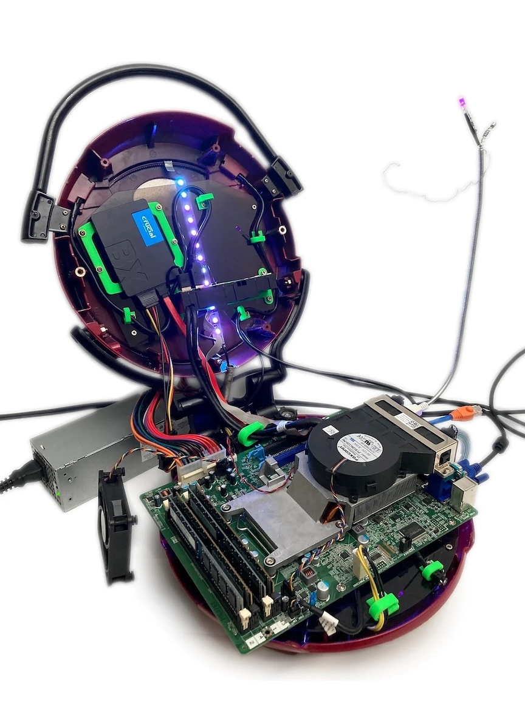

Lean Mean Computing Machine (LMCM)
A George Foreman Computer build by Doug MacDowell artist
Description:
The Lean Mean Computing Machine (LMCM) is a fully functional personal computer (PC) whose
components are compressed within a George Foreman 360 Grill.
The LMCM is versatile,
allowing preparation of virtual frittatas, pizzas, snacks and appetizers like mini
quiche or chicken nuggets, hot wings, steaks, chicken, burgers, and even ribs.
The LMCM lets you adjust for the perfect cooking temperature and is healthier than other
computing methods because of the patented slanted and nonstick design, draining fat and
technological byproduct from the virtual cooking process. Grilling components from both
sides is a real time saver, making the LMCM the go-to option for those with a busy schedule.
- Inte(R) Core(™) i7-3770 CPU @ 3.40GHz
- 106 sq. in. grilling space
- 16.0 GB Installed RAM
- 1500 watt cooking power
- 64-bit operating system
- Temperature control slide and LED indicator lights
- Crucial BX500 240GB Solid State Drive (SSD)
LMCM was featured in Do Not Research 2022–2023, and you can read more about this odd machine by checking out a Lean Mean Computing Machine Owner's Manual here Images of LMCM are below.
